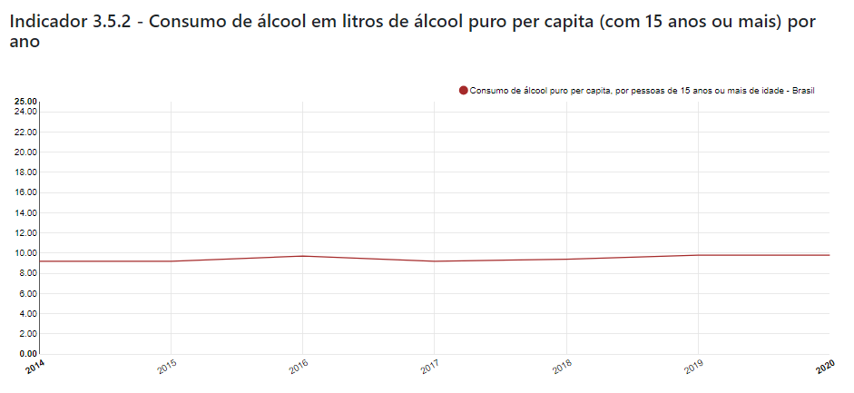

- O.D.S.-3
- O.D.S.-3
Saúde e Bem Estar
Objetivo de Desenvolvimento Sustentável
3.5
Nações Unidas: Reforçar a prevenção e o tratamento do abuso de substâncias, incluindo o abuso de drogas entorpecentes e uso nocivo do álcool.
Brasil: Reforçar a prevenção e o tratamento dos problemas decorrentes do uso de substâncias, incluindo o abuso de drogas entorpecentes e uso nocivo do álcool.
Indicadores
3.5.1 - Cobertura das intervenções (farmacológicas, psicossociais, de reabilitação e de pós-tratamento) para o tratamento do abuso de substâncias
3.5.2 - Consumo nocivo de álcool, tendo por referência o limiar nacional definido para o consumo de litros de álcool puro per capita (pessoas com 15 ou mais anos) por ano
